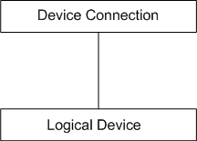
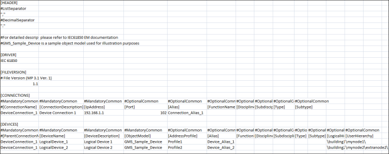

Format of the CSV Data
The format of the engineering data in the CSV file is structured as follows:

From the above diagram related to the format of the engineering data, there are two main parts; the connection and the device. Each device has a unique connection specification. Hence, before a device is declared, its connection should precede it.
For information on naming conventions for names, paths, and other elements, see Common Rules for Names and Paths in the Management System and Naming Rules for Subsystem Elements in Naming Conventions.

Header
The Header section contains two separators, a List Separator and a Decimal Separator. Both these separators are placed in the same sequence on two subsequent lines. These separators are placed inside quotes for easy identification.
The List Separator is used as a delimiter for parsing of row data in the CSV file.
The Decimal Separator is used for parsing of fields having values as floating point numbers.
Driver
Specifies the name of the subsystem (For example, IEC61850) to which the CSV file is associated with.
FileVersion
Displays the current version of the CSV file.
Connections
Connection Fields | |
Item | Description |
ConnectionName1) | Name of the IEC61850 connection. |
ConnectionDescription1) | Description of the IEC61850 connection. |
IP_Address1) | IP address of the connection of the IEC61850 network. This field should be in the format xxx.xxx.xxx.xxx where x is numeric and xxx is 0 through 255; both values inclusive. In the IEC61850 tab in the Device Connection expander, you can edit the IP address after import. |
Port | TCP port number to be assigned to the Device Connection. It must be numeric and in the range of 0 through 65535. |
Active | Specifies whether or not a connection with the IEC61850 device is to be established. It can have either of the following two values: |
Alias | Alias associated with the connection. The alias is unique across the management station. |
FunctionName | The associated function of the object. |
DisciplineID | Category of the discipline (for example, Building Infrastructure). |
SubdisciplineID | Description of the object (for example, Elevators for Building Infrastructure discipline). |
TypeID | Category of the corresponding type (for example, Boiler). |
SubtypeID | Description of the object (for example, Variable for type Boiler). |
1) | Mandatory field |
Devices
Device Fields | |
Item | Description |
ParentConnectionName1) | Name of the Connection to which the device should be associated with. The value in this field must be identical to the ConnectionName field. |
DeviceName1) | Name of the IEC61850 device. |
DeviceDescription1) | Description of the IEC61850 device. |
ObjectModel1) | Object Model of the device. You need to define and import an Object Model in the system before you can use this field. Refer to section Using an Object Model to Represent an IEC61850 Device for more information on object models. |
AddressProfile | AddressProfile associated with the object model to be applied with the device instance. |
Alias | Alias associated with the device. The alias is unique across the management station. |
FunctionName | The associated function of the object. |
DisciplineID | Category of the discipline (for example, Building Infrastructure). |
SubdisciplineID | Description of the object (for example, Elevators for Building Infrastructure discipline). |
TypeID | Category of the corresponding type (for example, Boiler). |
SubtypeID | Description of the object (for example, Variable for type Boiler). |
LogicalHierarchy | Logical Hierarchy of the device in the logical view. The logical hierarchy path in the CSV file must start and end with a backslash (\). |
UserHierarchy | User hierarchy of the device in the user-defined view. The user hierarchy path in the CSV file must start and end with a backslash (\). |
1) | Mandatory field |